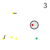

Levels are now made using svg edit (the alpha build). This is an in browser svg-editor.
Height and width: The height and width attributes of the svg canvas is going to be the dimensions of the game. A small level is 50x50, a large level is 200x200. This can be changed in the svg source or the document properties in the menu.
Save Count: This is a text element in the level with a single number in it. Don't use any other text elements other than this one and don't have any other characters in it other than numbers.
Safe Zone: This is defined by a circle element (not an ellipse) and MUST be the fill color e5e5e5 in lower case letters. It cannot have velocity.
Hero: There is only one hero per level. If you put in more than one the last one will be loaded. He is a circle element defined by the fill color of ff0000 in lowercase letters.
People: These are the people you have to save. They are a circle element with a fill color of ffff00 in lowercase letters.
Zombies: These are the enemy to be avoided. Again a circle with the fill color of 00bf5f in lowercase letters.
Walls: These are single ungrouped line segments. These must use the line element and not the path element or the polyline element. You may find it useful to turn on grid snapping to get them to touch each other.
If you want some people to start out moving draw a line on them which indicates the direction they will go. Then group the line and circle together. The parser will know this is a velocity vector and it will not show up as a wall.
If the zombie circle radius is bigger than 2 they will follow the hero and try to bit him if he gets too close. It makes the game interesting.
Also, when a person is bit by a zombie, they will start following that zombie around. You can make this interesting by intentionally having a zombie run into someone (or multiple people) to generate some weird behaviour.
A custom background image can be made for each level. It must have the same name as the level file for it to be loaded and it must be a png file. For example if you level is name lvl1.svg than the background image must be named lvl1.png. Also the image must be a square with a power of 2 dimensions (64, 128, 256, 512, 1024 are all valid) because that's how openGL likes to handle textures.
I have found it useful to make background images in gimp. Create a new document 512x512. Then open the svg file in gimp, make sure the import ratio matches the document, 512x512 in this case then copy and paste it as a new layer on the background image and use it to trace over. (It's pretty cool that gimp can import svg images as a bitmap). If you level file is not square (it's okay for the svg file to not be square, just the png image has to be square) than you can compress or stretch to fit the 512x512 background image. When the image is loaded in the game it will be stretched to fill the level.
See the levels inside the Zombies.app/Contents/lvl/ for examples of how to make a level.

Happy level making!